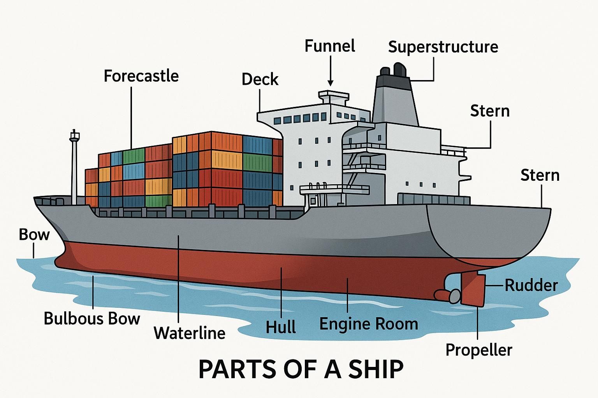

Cargo ships consist of several important components that work together
to ensure the vessel operates safely and efficiently. Each part plays
a specific role in maintaining the ship's stability, propulsion,
navigation, and cargo capacity.

- hull
- the main structural body that supports the ship and keeps it afloat
- bridge
- the navigation center where the captain and crew control the ship
- propeller
- a rotating device that pushes water backward to move the ship forward
- cargo hold
- large storage areas used to transport containers and goods